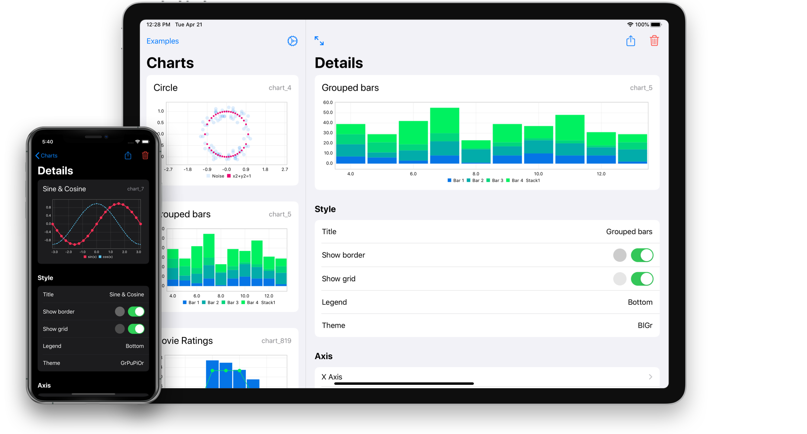
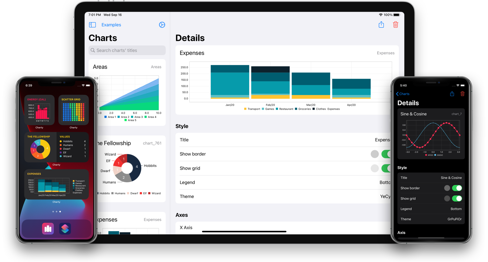
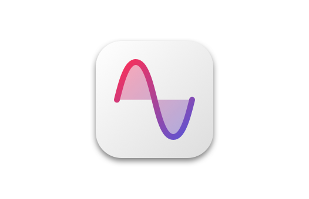
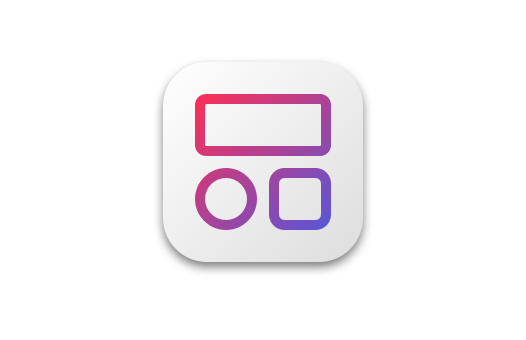

Create charts directly
from Shortcuts
Create charts directly from Shortcuts
Charty gives you 22 powerful new actions for Shortcuts,
allowing you to plot data directly from it!
Charty gives you 22 powerful new actions for Shortcuts, allowing you to plot data directly from it!




5 Series types
Use bar, line, scatter, pie, and donut charts to visualize your data in any way you'd like. Or combine them, to create richer charts.

5 Widget options
On iOS 14, you can now add any of your charts as a widget on your homescreen.
22 Powerful actions
Charty adds powerful actions to Apple's Shortcuts app, enabling users to create, export charts and much more.
42 Examples included
Including visualizations of math functions, health data, custom data, and much more.
Complete with chart previews and descriptions to get you started.
Complete with chart previews and descriptions to get you started.